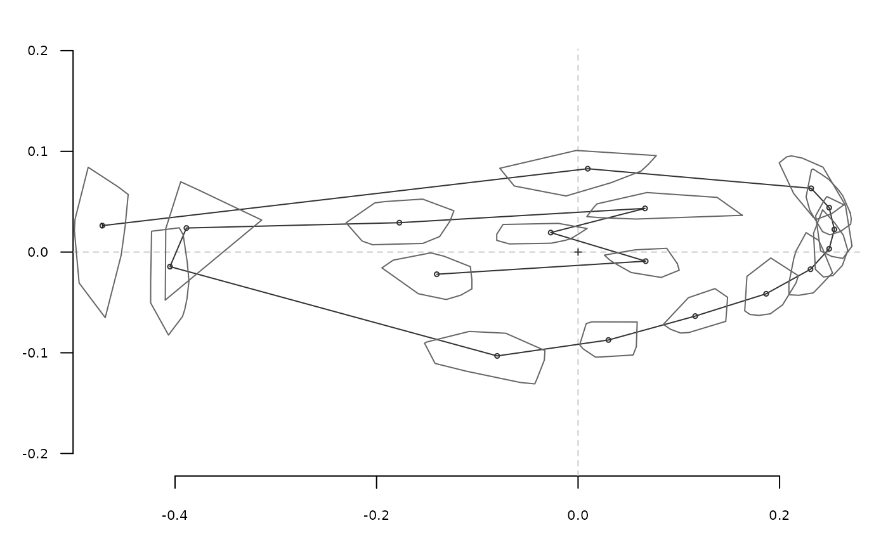

A wrapper that uses coo_chull
ldk_chull(ldk, col = "grey40", lty = 1)
| ldk | an array (or a list) of landmarks |
|---|---|
| col | a color for drawing the convex hull |
| lty | an lty for drawing the convex hulls |
coo_chull, chull, ldk_confell, ldk_contour
Other plotting functions: coo_arrows,
coo_draw, coo_listpanel,
coo_lolli, coo_plot,
coo_ruban, ldk_confell,
ldk_contour, ldk_labels,
ldk_links, plot_devsegments,
plot_table
Other ldk plotters: ldk_confell,
ldk_contour, ldk_labels,
ldk_links
ldk_chull(wings$coo)